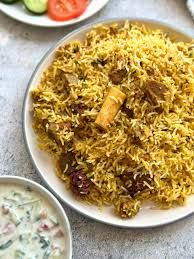
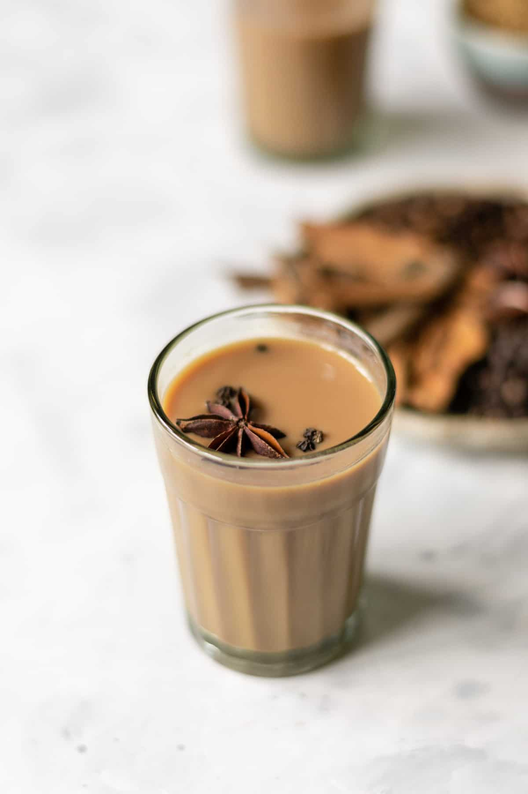

Biryani is a rice dish popular in the Indian subcontinent and beyond, made by layering cooked basmati rice with marinated meat or vegetables and aromatic spices

Chai a spiced black tea beverage originating from India. It typically includes spices like cardamom, cinnamon, cloves, ginger, and black peppercorns.

Chicken curry is a dish that consists of chicken stewed in an onion and tomato-based sauce, flavoured with ginger, garlic, tomato puree, chilli peppers and a variety of spices

Tandoori chicken is a dish made from chicken marinated in yogurt and spices and roasted in a cylindrical clay oven.

A samosa is a popular South Asian pastry, typically triangular or cone-shaped, filled with savory ingredients and deep-fried.
Pakora is a popular South Asian fritter made with vegetables coated in a seasoned chickpea flour batter and deep-fried.
Korma is a dish consisting of meat or vegetables braised with yogurt, water or stock, and spices to produce a thick sauce or gravy.